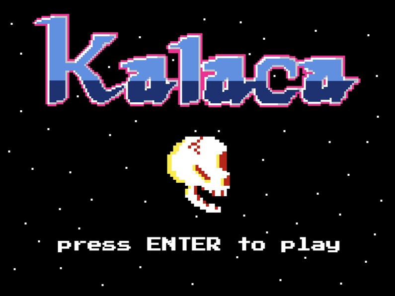

Kalaca 2021
this is a game built using javascript and the phaser3.js game engine. the idea for this game came about after a discussion with a friend about how the protagonists of video games tend to be conventionally 'good' and the enemies conventionally 'bad'. we decided it would be interesting to make a game where the roles are reversed. here the protagonist is a diabolical skull and the enemies are angels. my role was design and development as well as creating the sprites. the music and sfx were made by my friend sam.
try it out